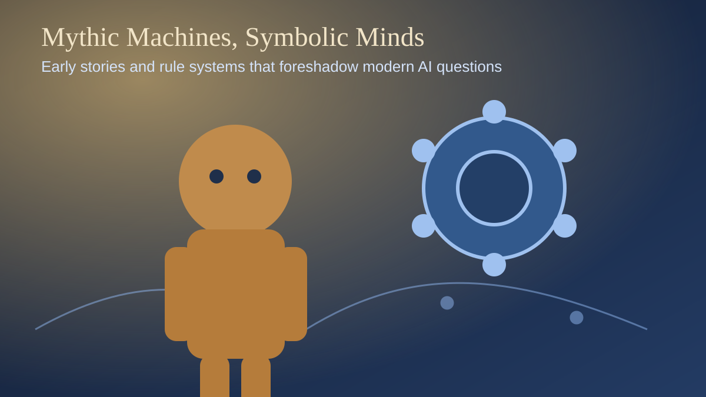
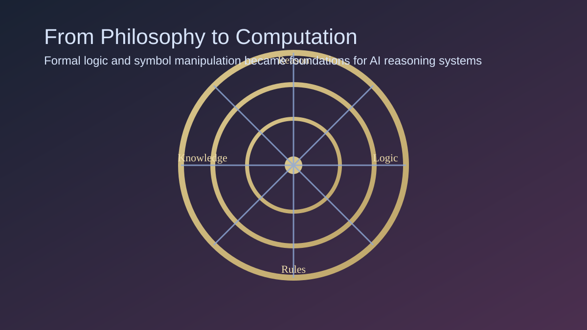
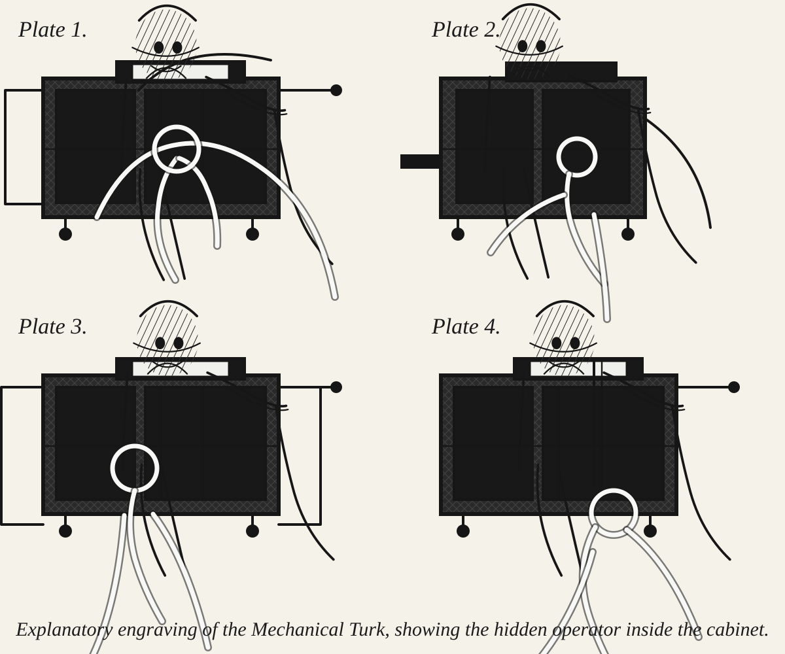
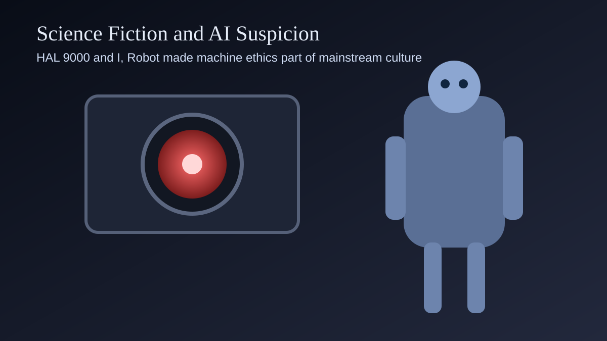

Overview
Artificial intelligence did not begin with modern computers. For over two thousand years, people asked similar questions: can intelligence be built, can behavior be simulated, and can a rule system produce something like thought?
Lesson 01 introduces those roots so students can recognize that modern AI is both a technical project and a cultural project. The same themes keep repeating: automation, control, trust, and what counts as real intelligence.

Mythic Prototypes of Artificial Life
Talos (Ancient Greece)
Talos, a bronze guardian said to patrol Crete, is one of history's earliest "robot-like" figures. He acts like a programmed defender with a fixed mission: guard borders and enforce security.
Pygmalion's Statue
The Pygmalion story frames a lasting idea: humans can create an artificial form so convincing that the boundary between object and living being collapses.
The Golem
Golem traditions center on a constructed being animated through symbolic commands. This prefigures a major AI question: if behavior comes from encoded instructions, where should moral responsibility live?
Why myths matter in an AI class
Myths are not technical proofs, but they reveal recurring design concerns: autonomy, obedience, safety constraints, and failure when creators lose control.
From Philosophy to Formal Systems
Anaximander and Mechanical Models
Anaximander is often cited among the earliest thinkers to model the universe with natural mechanisms rather than purely mythic explanation.
Democritus: Atoms and Rules
Democritus proposed that reality is built from atoms obeying rules, a conceptual ancestor of computational thinking where complex outcomes emerge from simple units.
Aristotle and Formal Logic
Aristotle's formal logic made structured reasoning explicit. Symbolic AI later reused this tradition through propositions, inference chains, and rule engines.

Ramon Llull extended this trajectory by building rotating logical wheels, while Rene Descartes argued that organisms could be treated as machine-like systems. Together, these ideas built a bridge from philosophy to programmable reasoning.
Fraud, Stagecraft, and AI Snake Oil
The Mechanical Turk
In the 18th century, the Mechanical Turk appeared to be a chess-playing automaton. It was marketed as intelligent machinery, but a hidden human player actually operated it.
This is a foundational AI literacy case: powerful demos can hide hidden labor. Students should learn to ask what is truly automated versus what is staged.

Science Fiction and Public AI Imagination
HAL 9000
HAL 9000 (from 2001: A Space Odyssey) helped define public suspicion toward advanced AI: highly capable, opaque, and potentially unsafe when goals conflict with human priorities.
Isaac Asimov's I, Robot (Brief Synopsis)
I, Robot is a linked story collection examining robot behavior under the Three Laws of Robotics. Asimov shows that even explicit safety rules can create edge cases, paradoxes, and unintended outcomes.
For students, this fiction is useful as ethical simulation: it tests how rule-based safety can fail in complex social reality.

Chronological Timeline of Core Ideas
- Talos
Autonomous bronze guardian in Greek myth.
- Anaximander
Early mechanical modeling of natural systems.
- Democritus
Universe described as atoms and rules.
- Aristotle
Formal logic as structured reasoning.
- Ramon Llull
Rotating logical wheels to combine concepts.
- Descartes
Biological-machine framing and mechanistic thought.
- Mechanical Turk
High-profile AI-style fraud in chess.
- I, Robot
Rule-based robot ethics in fiction.
- HAL 9000
Cultural model of intelligent but mistrusted AI.
Classroom Use and Next Step
This lesson establishes conceptual vocabulary for everything that follows in the timeline. Students should leave with two skills: identifying historical roots of AI ideas and critically evaluating claims about machine intelligence.
Reference Focus (for student notes)
- Myths and fiction often predict social concerns before formal engineering catches up.
- Formal logic and symbolic systems are key ancestors of programmable reasoning.
- AI literacy includes spotting performance claims that may hide human labor.